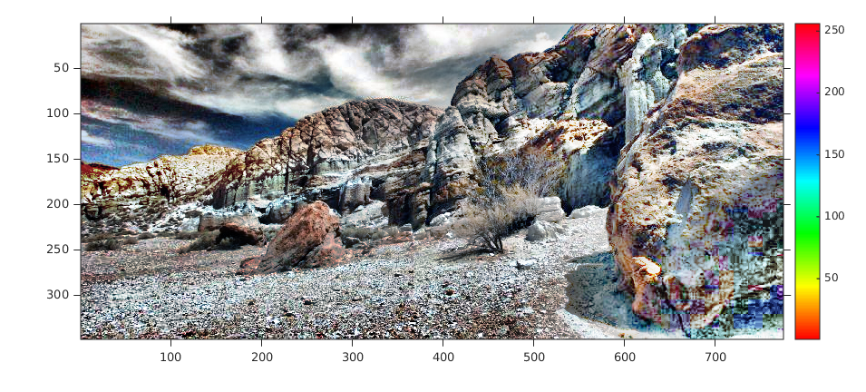
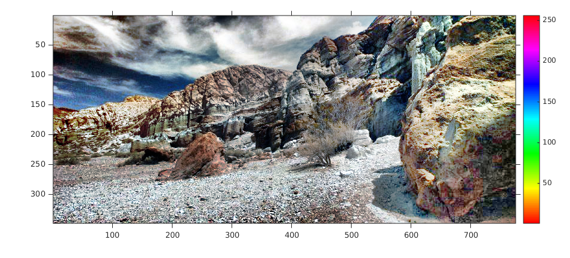

Contents
MyMainScript
tic;
Your code here
path1 = '../data/barbara.png';
path2 = '../data/TEM.png';
path3 = '../data/canyon.png';
[img1, map1] = imread(path1);
[img2, map2] = imread(path2);
[img3, map3] = imread(path3);
map3 = colormap(hsv(255));
n1 = 'barbara';
n2 = 'TEM';
n3 = 'canyon';
figure('Name', strcat('original_',n1)), imshow(img1, map1), colorbar, truesize, axis on;
figure('Name', strcat('original_',n2)), imshow(img2, map2), colorbar, truesize, axis on;
figure('Name', strcat('original_',n3)), imshow(img3, map3), colorbar, truesize, axis on;
name = cell(3,1);
name{1} = n1;
name{2} = n2;
name{3} = n3;
path = cell(3,1);
path{1} = path1;
path{2} = path2;
path{3} = path3;
Linear contrast stretching
for i = 1:2
[img, map] = imread(path{i});
output = myLinearContrastStretching(img);
figure('Name', strcat('Q2_a_',name{i})), imshow(output, map), colorbar, truesize, axis on;
savepath = strcat('../images/','Q2_a_',name{i},'.mat');
save(savepath, 'output');
end;
[img, map] = imread(path{3});
output = myLinearContrastStretching(img);
figure('Name', strcat('Q2_a_',name{3})), imshow(output, map3), colorbar, truesize, axis on;
savepath = strcat('../images/','Q2_a_',name{3},'.mat');
save(savepath, 'output');
Histogram Equalization
for i = 1:2
[img, map] = imread(path{i});
output = myHE(img);
figure('Name', strcat('Q2_b_',name{i})), imshow(output, map), colorbar, truesize, axis on;
savepath = strcat('../images/','Q2_b_',name{i},'.mat');
save(savepath, 'output');
end;
[img, map] = imread(path{3});
output = myHE(img);
figure('Name', strcat('Q2_b_',name{3})), imshow(output, map3), colorbar, truesize, axis on;
savepath = strcat('../images/','Q2_b_',name{3},'.mat');
save(savepath, 'output');
Adaptive Histogram Equalization
w_sizes = [64, 128, 256];
disp(size(w_sizes));
for i = 1:2
for w = 1:size(w_sizes, 2)
[img, map] = imread(path{i});
output = myAHE(img, w_sizes(1,w));
figure('Name', strcat('Q2_c_',name{i},'_w_size_',int2str(w_sizes(1,w)))), imshow(output, map), colorbar, truesize, axis on;
savepath = strcat('../images/','Q2_c_',name{i},'_w_size_',int2str(w_sizes(1,w)),'.mat');
save(savepath, 'output');
end;
end;
for w = 1:size(w_sizes, 2)
[img, map] = imread(path{3});
output = myAHE(img, w_sizes(1,w));
figure('Name', strcat('Q2_c_',name{3},'_w_size_',int2str(w_sizes(1,w)))), imshow(output, map3), colorbar, truesize, axis on;
savepath = strcat('../images/','Q2_c_',name{3},'_w_size_',int2str(w_sizes(1,w)),'.mat');
save(savepath, 'output');
end;
1 3


Contrast Limited Adaptive Histogram Equalization
for i = 1:2
[img, map] = imread(path{i});
output = myCLAHE(img, 200, 0.05);
figure('Name', strcat('Q2_d_',name{i},'_w_size_200_t_0.05')), imshow(output, map), colorbar, truesize, axis on;
savepath = strcat('../images/','Q2_d_',name{i},'_w_size_200_t_0.05.mat');
save(savepath, 'output');
end;
[img, map] = imread(path{3});
output = myCLAHE(img, 200, 0.05);
figure('Name', strcat('Q2_d_',name{3},'_w_size_200_t_0.05')), imshow(output, map3), colorbar, truesize, axis on;
savepath = strcat('../images/','Q2_d_',name{3},'_w_size_200_t_0.05.mat');
save(savepath, 'output');
for i = 1:2
[img, map] = imread(path{i});
output = myCLAHE(img, 200, 0.025);
figure('Name', strcat('Q2_d_',name{i},'_w_size_200_t_0.025')), imshow(output, map), colorbar, truesize, axis on;
savepath = strcat('../images/','Q2_d_',name{i},'_w_size_200_t_0.025.mat');
save(savepath, 'output');
end;
[img, map] = imread(path{3});
output = myCLAHE(img, 200, 0.025);
figure('Name', strcat('Q2_d_',name{3},'_w_size_200_t_0.025')), imshow(output, map3), colorbar, truesize, axis on;
savepath = strcat('../images/','Q2_d_',name{3},'_w_size_200_t_0.025.mat');
save(savepath, 'output');
toc;
Elapsed time is 406.290221 seconds.
